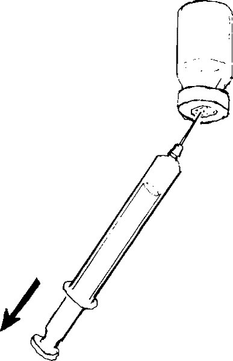

{% set pagetitle = "How to inject medicines
into muscle
If the medicine comes as liquid in a bottle" %}
{% set seq_length = 7 %}
{% set seq_position = 2 %}
{% set seq_llink = "How_to_injection_from_bottle1.html" %} ## set rlink equal to next page href
{% set seq_rlink = "How_to_injection_from_bottle3.html" %} ## set llink equal to previous page href
{% extends "templates.jinja/base.page-with-sequence.html" %}
{% block title %} Hesperian - Pregnancy & Birth{% endblock %}
{% block id %}Injection_from_bottle2{% endblock %}
{% block content %}
-  3. Turn the bottle upside down. Be sure the tip of the needle points into the medicine inside the bottle and not into the air. Hold the barrel of the syringe still and slowly pull the plunger until the correct amount of medicine enters the syringe. Pull the syringe out of the bottle.
{% endblock %}
{% block footer %}
{% endblock %}